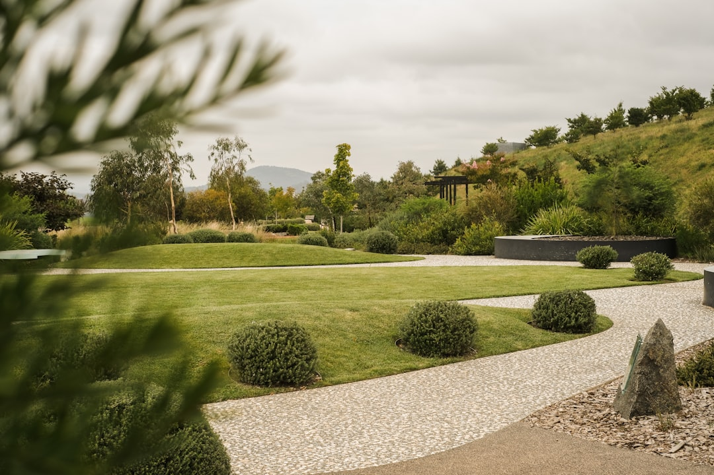

For Canberra wall projects, start with 6 recorded site facts: height, cut and fill, loads, drainage, boundaries and access. The source page sets out 8 wall pathways and says ACT building approval and development approval are separate checks. A clear enquiry should include dimensions, visible symptoms, access notes, water paths and nearby structures, so each written response can be judged against the same site evidence.
For homeowners comparing retaining walls canberra options, the useful starting point is not the face material, but what the ground, water, access and approval pathway require.
Retaining Walls Canberra Explained
Retaining Wall Canberra presents a wall project as a site reading exercise before product choice. The source page puts retained height, cut and fill, loads, drainage, boundaries and access ahead of material selection. Two walls can look similar from the garden while holding different ground and different nearby loads.
Begin with the tallest retained point, then describe the wider slope around it. Take wide photographs from both ends before close photographs of lean, cracking, decay, washout or persistent wetness. That order gives the first inspection the whole level change, not only the visible face.
The site describes three recurring Canberra enquiry shapes: older house bench walls near the end of service life, sound walls affected by later landscaping or redirected water, and newer estate boundaries tied to subdivision levels and neighbouring ground.
Who This Applies To
This guide suits ACT owners planning a new wall, replacing a failing terrace, or preparing a clearer enquiry before a tradesperson inspects. It is most useful where the wall sits near a driveway, building load, boundary, garden level, paving, downpipe, irrigation line or tight access route.
- Movement or cracking: record visible symptoms, then show the wider ground shape around them.
- Landscaping changes: ask how raised beds, paving, downpipes or irrigation alter water entering the retained soil.
- Boundary work: note fences, neighbouring levels and any visible easement constraints.
- Replacement decisions: ask what evidence supports repair, stabilisation or full replacement.
A separate editorial companion, Canberra retaining wall planning notes, gives a shorter checklist view.
Approval And Qualified Roles
The source page keeps building approval and development approval as separate ACT checks. It does not say every wall follows one pathway. It says projects should be checked against both approval pathways, especially where loads, boundaries, nearby structures or exemption limits may affect the job.
Ask what information is needed to decide the pathway, whether design or certification is required, and which qualified professional is responsible for regulated work. Keep the enquiry, dimensions, photographs and written response together. If later advice changes the scope, keep that change in writing as well.
Useful approval questions are practical rather than speculative: what height has been measured, what sits above the retained ground, where water leaves, what access is available, and what documents are needed before work is priced or scheduled.
Compare Wall Systems By Constraints
The source page identifies concrete sleeper, segmental block and masonry, sandstone and natural stone, timber sleeper and garden, gabion, drainage and excavation coordination, engineered work, and repair or replacement pathways. Treat those as decision paths, not interchangeable finishes.
For concrete sleepers, ask how embedment, handling access, transitions, loads and drainage are designed together. For segmental block or reinforced masonry, ask about wall geometry, footing or reinforced soil requirements, footprint and finish. For stone, ask whether bearing, footprint and machinery access suit a gravity solution.
For timber garden walls, discuss durability, moisture exposure, fixings, drainage and future replacement. For gabions, ask how the foundation, baskets, stone and filter details will be specified. For repairs, begin with the cause of movement, decay, washout or cracking before accepting a repair scope.
Quote Inputs That Improve The Inspection
A strong enquiry lets the first inspection focus on the right problem. The site ledger starts with grade, then adds loads, drainage, boundaries and access. An owner can gather those observations without pretending to complete a design.
- Measure the tallest retained point and describe the wider cut and fill.
- Photograph buildings, driveways, paving, fences, garden beds and other nearby features.
- After rain, note where water appears to enter, pool or leave.
- Describe the route from the street to the wall, including steps, gates and spoil movement.
- State whether the enquiry is for new work, replacement, repair or investigation.
Photographs do not replace professional assessment. They make the first written response more exact and easier to compare.
Canberra Conditions To Ask About
The source page ties local work to how Canberra suburbs were formed. It mentions established inner south gardens, Weston Creek, Belconnen and Tuggeranong house benches below hillsides, and Gungahlin and Molonglo blocks shaped by larger civil earthworks. Use that history to frame questions, not to assume a design.
On an older garden wall, ask whether age, moisture, changed landscaping or ground movement appears most relevant. On cut and fill land, ask how the wall relates to the bench, boundary levels and nearby loads. On a newer estate boundary, ask what constraints come from inherited levels, easements and neighbouring ground.
The source also notes frosty winters, dry spells and short intense storm bursts. Ask how the proposed drainage, outlet and retained soil detail will manage repeated wetting and drying.
- Record the geometry. Measure the highest retained point and describe the wider cut and fill so the wall is not judged from one number alone.
- Map water movement. After rain, note where water enters, sits behind or leaves the retained area.
- Photograph loads and access. Capture nearby structures, driveways, paving, garden beds, boundaries and the route from the street to the wall.
- Ask about approvals. Request written guidance on whether building approval, development approval, design or certification needs further checking.
- Compare written scopes. Assess responses against the same facts, including system choice, drainage, excavation access and repair or replacement reasoning.
| Situation | Main question | What to document |
|---|---|---|
| Older or failing wall | Is the issue age, changed ground or changed water flow? | Wide photographs, maximum height, lean, cracking, decay, washout and wet areas |
| New or replacement wall | What is being retained and what sits above it? | Height, cut and fill, nearby loads, boundaries, access and drainage path |
| Approval sensitive wall | Which ACT approval pathway and qualified roles apply? | Written advice on BA, DA, design, certification and regulated work |
Common questions
What should I send before asking for a quote? Send maximum retained height, wide photographs from both ends, close views of symptoms, notes on water paths, nearby structures, boundaries and access from the street. The source page says dimensions, symptoms, access, water paths and nearby structures make a clearer written enquiry.
Does material choice come first? No. The source page puts grade, water, load and access before material selection. Concrete sleepers, masonry, stone, timber and gabions each depend on different site constraints.
Are ACT building approval and development approval the same check? The source page treats them as separate pathways to check. Ask which pathway applies, what information is missing, and whether design or certification needs a qualified professional.
When is repair different from replacement? Repair and replacement are described as cause led. Movement, decay, washout and cracking should be assessed first, then the written scope should explain whether repair, stabilisation or replacement is proposed.
This guide covers site facts, wall system comparison, written quote inputs and approval questions for Canberra retaining projects.